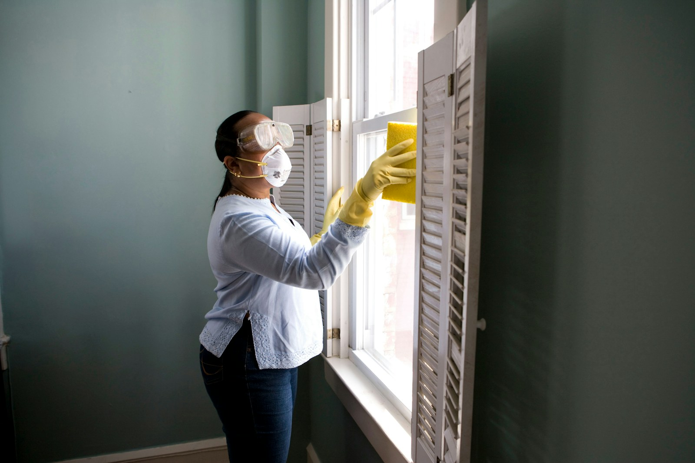

Plumbing help
Leak diagnosis, fitting replacement and general plumbing support presented with clear scope.
Request this service ↗A conversion-focused concept for a local home-service business—designed to make services easy to understand and the next step reassuringly clear.
Concept-only guarantee UI
A live business would replace this with verified service terms.

What we would offer
These fictional service categories demonstrate a clear, scannable structure for a multi-service local business.
Leak diagnosis, fitting replacement and general plumbing support presented with clear scope.
Request this service ↗Fault checks, fixture support and small electrical jobs with verified licensing details in a real build.
Request this service ↗A flexible category for common household repairs, adjustments and property maintenance.
Request this service ↗A photo-led enquiry can help a service business understand the job before calling back.
Start an enquiryService-area presentation
A production version would list real neighbourhoods, travel limits and availability. This concept intentionally avoids naming a real operating area.
How it works
A clear process helps visitors know what happens after they submit an enquiry—without relying on invented reviews.
Choose a service, share details and optionally attach useful visual context in a real implementation.
The business reviews the enquiry and clarifies timing, access and likely next steps.
Verified pricing rules and an appointment window would be confirmed before dispatch.
The technician documents the work and explains any practical after-care.
Why this structure builds trust
Trust is designed through honest process information, practical expectations and visible proof—not fabricated ratings.
Visitors understand how an enquiry becomes a scheduled visit.
Service limits and pricing approach can be explained before work starts.
Call, WhatsApp and form pathways can suit different customer preferences.
Urgent-contact layout concept
This demonstration does not connect to emergency services. A real site would define supported issues and verified response availability.
View contact options ↗Work presentation
Gallery captions demonstrate how a real business could provide visual context without inventing customer outcomes.
Real client work would be documented here with permission.
Questions before booking
Concept FAQ copy demonstrates practical clarity. A live business would replace it with verified policies.
A real business could explain call-out fees, estimate rules and approval steps here before work is scheduled.
The live site would list confirmed neighbourhoods and explain any extended travel zone.
Yes. A production enquiry could accept visual context, with clear privacy and file-size guidance.
The real provider would publish exactly what it supports, current hours and when customers should contact emergency services instead.
Contact paths
All contact details below are intentionally non-operational placeholders for this portfolio concept.
Location demonstration
No real address or service area
Request a clear quote
This form demonstrates a local-service lead flow. Submitting it does not send information anywhere.